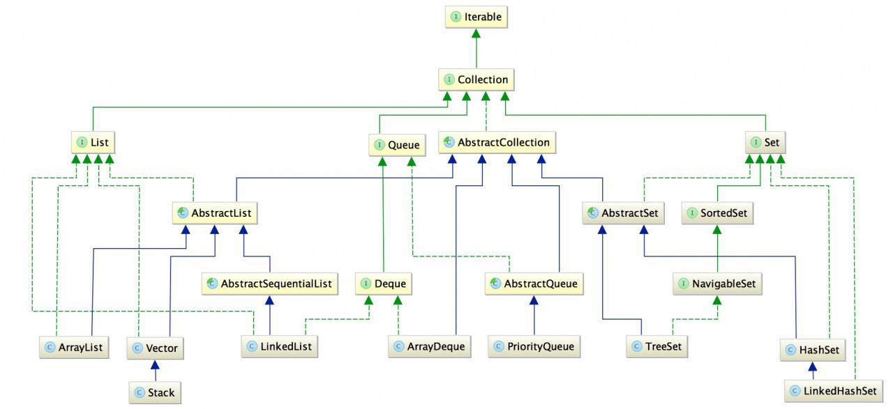
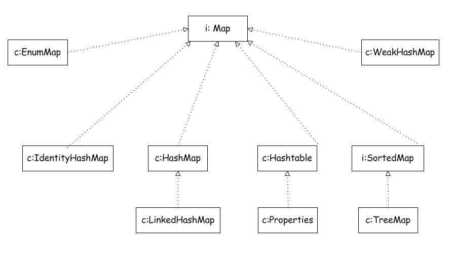
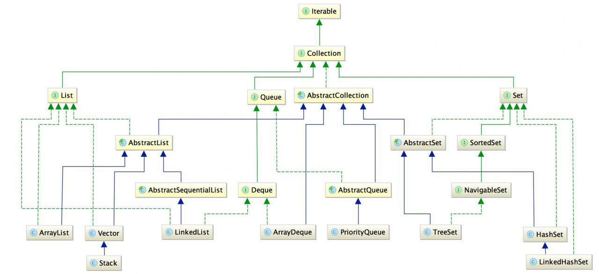
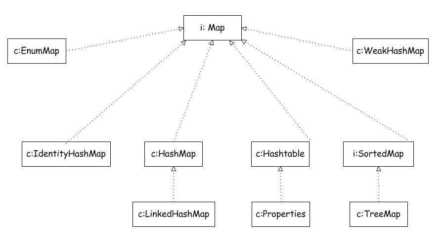
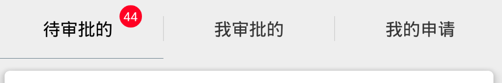
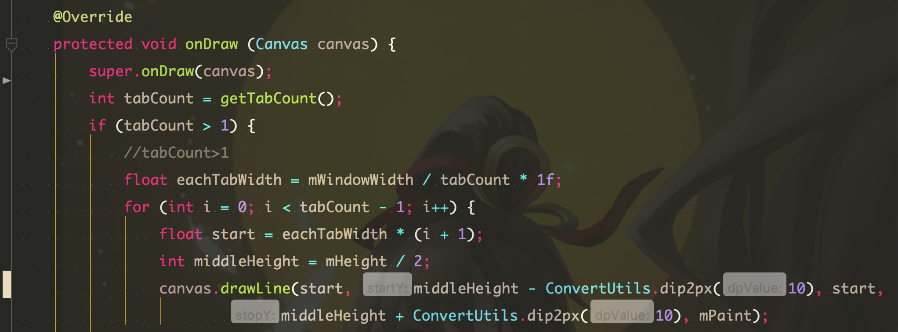

先上一张图，理解下集合之间的相互关系：

其中：实线代表继承；虚线代表实现接口。
下面这张表示Map的：

c：class
i：interface
继承和实现关系简单明了。
通常我们常用的也就ArrayList和HashMap，不过还是需要了解下各个集合特点和底层实现的～
先上一张图，理解下集合之间的相互关系：

其中：实线代表继承；虚线代表实现接口。
下面这张表示Map的：

c：class
i：interface
继承和实现关系简单明了。
通常我们常用的也就ArrayList和HashMap，不过还是需要了解下各个集合特点和底层实现的～
腹有诗书气自华。
个人觉得在平时的每一天每一刻都是决定你将来达到高度的关键时机，当你积蓄够力量，自然而然就能抓住机会，所以，不要吝啬，不要拖延，拿起书来吧！
我选择书籍的时候，听很多人说在知乎上搜一下就好，知乎上推荐的大多都很中肯，不过难免有些人言过其实，需要有辨识能力撒～
我觉得那些教用Eclipse的入门书籍就不要看了吧… 而且进来Android版本变化很大，有些还在教适配3.0之前也有点没必要了
网上的入门资料一百度一大把，随随便便一篇边看边敲也得个小半天,我更喜欢先会写个大概，在慢慢理解，看了中文官网教程，很详细，有原理有实例。
编辑器上我比较喜欢JetBrains 的WebStorm ，因为Android Studio 用惯了哈… 建议下载非社区版的，百度激活码有很多，直接新建project 就支持RN的project ，觉得用命令行建工程怪怪的..

如图，今天UI给了如图的效果图，我想了想相比自定义修改design下的tablayout 更简单些。
首先，分割线肯定是要继承TabKayout 在覆写的ondraw方法中画上去的，值得注意的是，我们需要获取到屏幕宽度和tab个数，View高度直接在构造器里是获取不到的，推荐在onWindowFocusChanged 方法中获取（此时View即将呈现固能获取到View高度）
首先获取屏幕宽度作为view宽度，实例化画笔准备绘制分割线。

分割线很简单，接下里是badge。原理上我们只要得到tab上的包裹textView的viewgroup，在其中add 上一个背景为红色圆形的textView就行了。但问题是textView被default修饰符所保护，我们拿不到，当然可以用反射，有点糙。我看了下源码，发现tab可以支持自定义布局，tab.setCustomView(res或者rootView），这就好办了，我们自定义个带有badgeTextView 的布局设置上即可。 值得注意的是，源码中注释有这么一句话
|
|
意思是，google已经为你自定义布局的textView 的id做了关联，你只需要调用android.R.id.text1 系统就会自动帮你实例化并且绑定数据到tablayout1234<TextView android:id="@android:id/text1" android:layout_width="match_parent" android:layout_height="match_parent"/>
其实，很多需求都可以在原有的控件上加以拓展，当然能够继承View或者ViewGroup，且写出易拓展，整洁而不影响性能，能够考虑到方方面面的库，能够启发帮助别人是最好的！
正如你看到的，显示头像和个人欣喜的侧边栏一直在首页左边， 这时next 三个主题之一，当我从默认主题改成这个主题的时候，却怎么也不生效，侧边栏还是默认被隐藏着，而且只有多半个… 直到我看到别人的about 目录下的index.md 中有一个layout: post 属性，我试着加上以后突然好了… 喜欢别人的主题可以从底下显示hexo主题的地方点进去看看人家的主题配置… 实在看不懂就copy过来嘛…

“当你通过垂方向的滑动手势来刷新内容的时候，你可以用这个控件，实例化这个控件的activity 需要添加一个（注意是add，增量逻辑） OnRefreshListenner 来监听刷新事件的完毕；当刷新手势结束后，控件会通知每一个add 过的监听，在监听回调方法中你可以刷新内容，当然如果内容刷新后，需要结束刷新动画，你需要调用swipeRefreshLayout.setRefreshing(false)来结束刷新动画，如果activity 想展示加载进度，可以调用swipeRefreshlayout.setRefreshing(true),如果想禁用滑动手势触发刷新动画，就调用setEnable（false）“
该控件需作为要刷新的控件的直接父View，且有且只能有一个子View，会拦截手势，而且会强行自适应这个子View。这个控件不提供任何对事件的操控操作，作为代替，当手势触发的时候一个菜单项会被提供来刷新内容“

不用看那头两个见名知意的成员属性。这个viewgroup继承了nestedScrollingParent和child ，记得去年我在hongyang公共号看到一篇文章，我先去回顾下…(我偶像还是值得信懒的😁)
google 推荐不要用构造器传参，因为内存重启的时候，系统为你恢复fragment的时候不会调用你带参数的构造器，这样你的参数就会是null，调用参数的地方会是空指针。所以google推荐你使用setArguments来传值。
当你在一个跟布局为Linearlayout的Activity中add fragment的时候，fragment 不会覆盖全屏，只会根据LinearLayout的布局方向，add到最后或者右边（LinearLayout不具备层叠效果）；这时如果一定要add fragment的话，可以给LinearLayout外层套一个FrameLayout，fragment add 其上。
响应back键：如果能在Activity中获取到fragment 实例，那再简单不过了。说一种能不能都行的方法：
|
|
是什么fragment 对应强转就行了。
fragment 移除的话直接在fragment 中调用 getFragmentManager().popBackStack();即可，而且这个方法有重载满足移除fragment的不同需求，可以点进去看下，这里不赘述。并且，fragmentManager还提供了一个fragment在stack发生变化时回调的方法
getFragmentManager().addOnBackStackChangedListener(new FragmentManager.OnBackStackChangedListener() {
@Override public void onBackStackChanged() {
}
});
记录在开发过程中捡到的资源，有芝麻也有西瓜，敝帚自珍，好高骛远也要脚踏实地。
这些资料网上一百度一大堆，我只是把经常看的搜集一起方便访问。
希望能为各位大佬的宝贵青春+1s～
向这些帅逼博主们致敬！
觉得写的含金量很足的文章